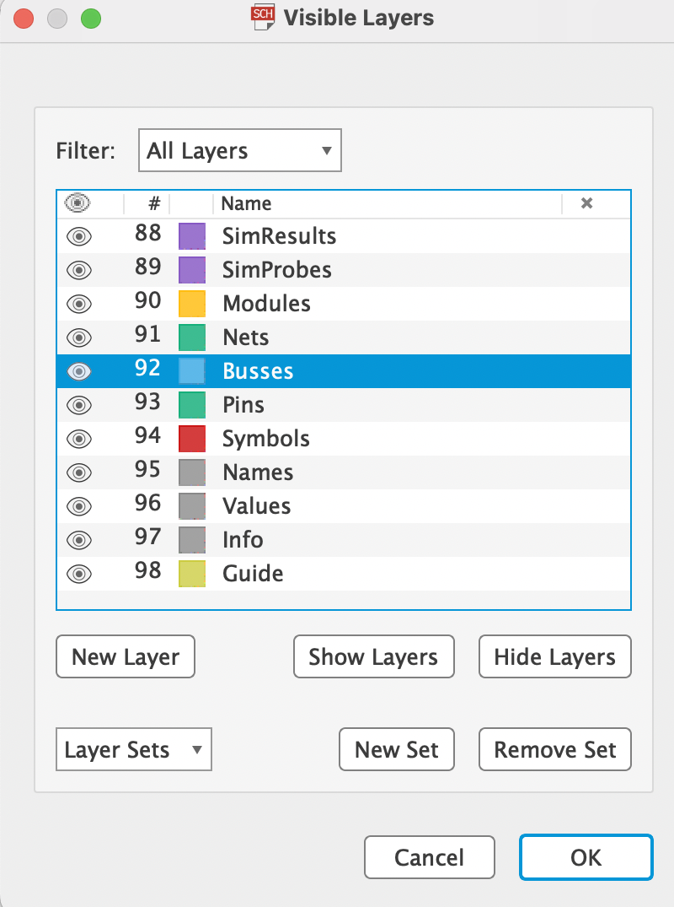
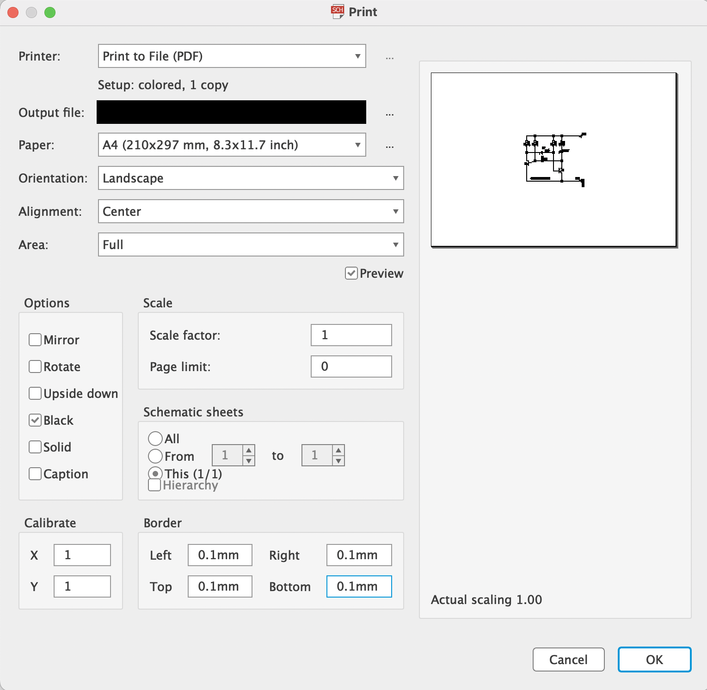

Príkazom View/Display alebo na paneli zapneme len tie hladiny, ktoré potrebujeme vytlačiť (vytlačí sa to, čo vidíme).

91 Nets - vodiče
92 Busses - zbernice
93 Pins - vývody súčiastok (piny)
94 Symbols - schematické značky
95 Names - označenie súčiastok (R1, R2, ...)
96 Values - hodnoty, príp. typy súčiastokś
Zvyčajne pri tlači schémy je vypnutá hladina Pins.
V menu File/Print nastavíme parametre tlače:
MIRROR - zrkadlenie výstupu (pri tlači schémy nezapínať!)
ROTATE - otočenie v stupu o 90°
UPSIDEDOWN - otočenie výstupu o 180°. Spolu s ROTATE celkom o 270°
BLACK - ignoruje nastavenie farieb hladín a tlačí všetko čierno
SOLID - ignoruje nastavenie druhov výplní hladín a tlačí všetko s pevnou výplňou
Caption - aktivuje tlač hlavičky, obsahujúcej čas a dátum tlače a meno súboru. Ak je výkres zrkadlený, v hlavičke sa objaví slovo "mirrored" a ak mierka nie je .0 je pridané do hlavičky ako f=... (mierka je uvedená na 4 des. miesta).
Scale factor - nastaví mierku výkresu (1 znamená 1:1)
Page limit - nastaví maximálny počet strán pre tlač. Ak by výkres n zadaný počet strán nevošiel, mierka bude utomaticky zmenšená. Hodnota 0 znamená ez obmedzenia.
Nastavenie strany Page...
Border - nastavuje ľav (left), horný (top), pravý (right) a dolný (bottom) okraj. Preddefinované hodnoty sú prevzaté z vládača tlačiarne.
Calibrate - Ak chceme použiť tlačiareň priamo na tlač výrobných p dkladov spojov, musíme ju najskôr kalibrovať, aby sme dostali výkres presne v mierke 1:1 (hodnoty 1 predpokladajú, že mierka v oboch smeroch presne súhlasí).

Obr. Nastavenie parametrov tlače pri tlači el. schémy